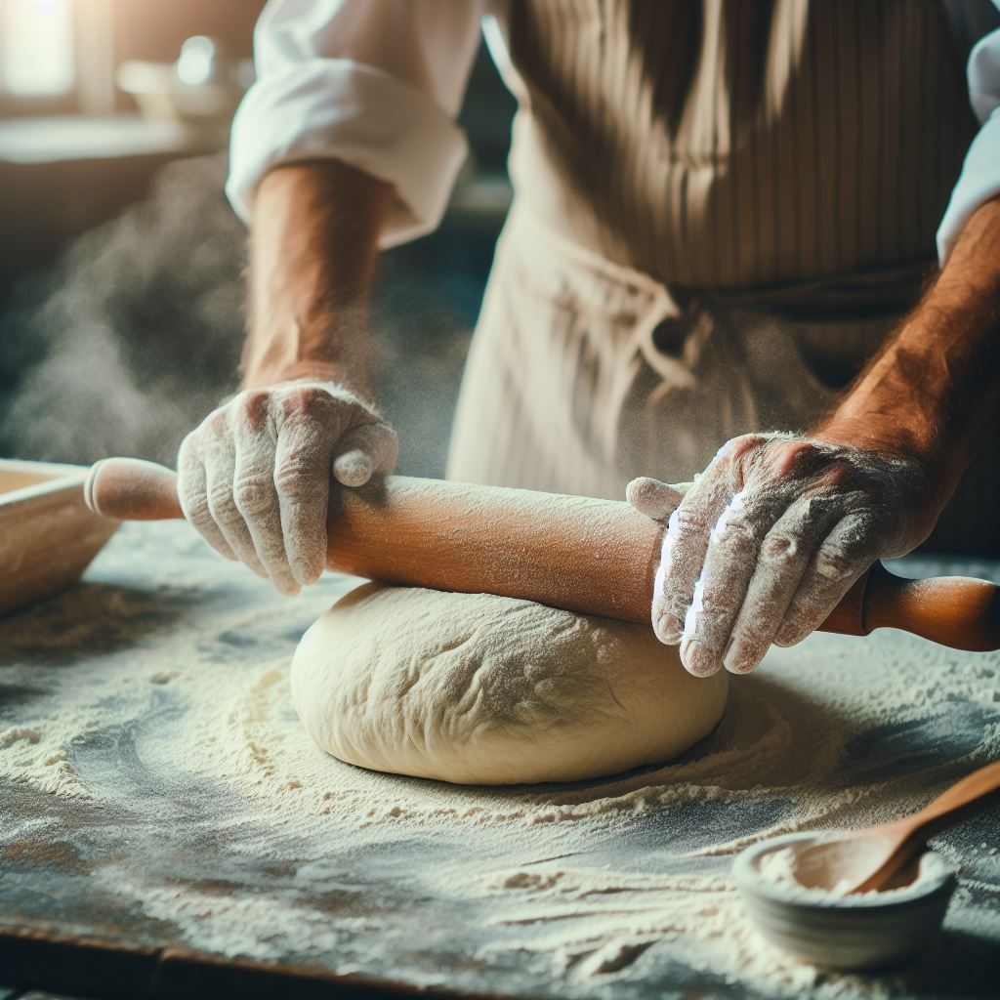
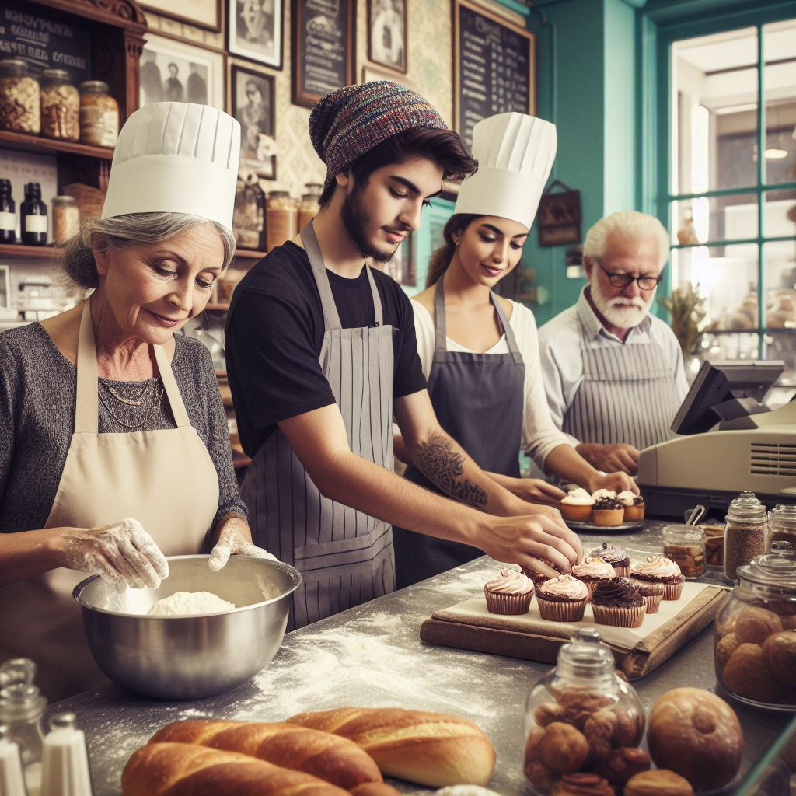

Sobre nós
Bem-vindo à **Padaria Paulistana**, o seu cantinho de pão fresco
e delícias caseiras no coração de São Paulo.


Fundada em 1990, a Padaria Paulistana é uma instituição familiar que se orgulha de servir a comunidade
local com produtos de panificação de alta qualidade.
Nossa paixão é criar pães, bolos e doces deliciosos que trazem um sorriso ao rosto de nossos clientes.
A Padaria Paulistana é mais do que apenas uma padaria. É um lugar onde os clientes se tornam amigos e
onde a tradição e a inovação se encontram.
Oferecemos uma variedade de pães artesanais, doces tentadores e uma seleção de sanduíches e salgados que
são perfeitos para o almoço.
Venha nos visitar na Padaria Paulistana, onde o pão é uma arte e cada cliente é parte da nossa família.